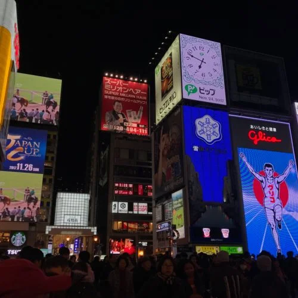

KYOTO & OSAKA ✦
從京都的朱紅鳥居，到大阪的河畔霓虹。和三位旅伴一起，慢慢逛完這趟關西之旅。
在京都沿著石板路散步，在大阪順著河岸找晚餐。
千本鳥居、東山老街與嵐山竹林。

大阪城、新世界與道頓堀的霓虹。
四日示範路線，停留時間可依步調調整。
往京都站或大阪站可查 JR 特急 HARUKA 的停靠站和最新時刻。
京都站和大阪站之間可查 JR 京都線。從祇園或河原町出發時，也可比較京阪與阪急的路線。
查景點的最近車站，再用 Osaka Metro 路線圖確認出口和轉乘。